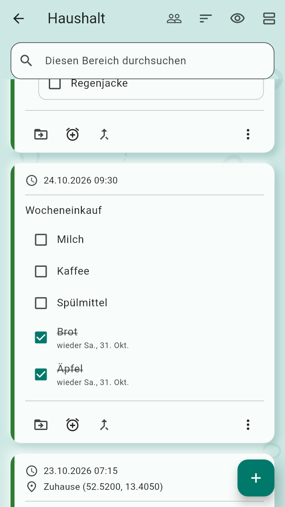
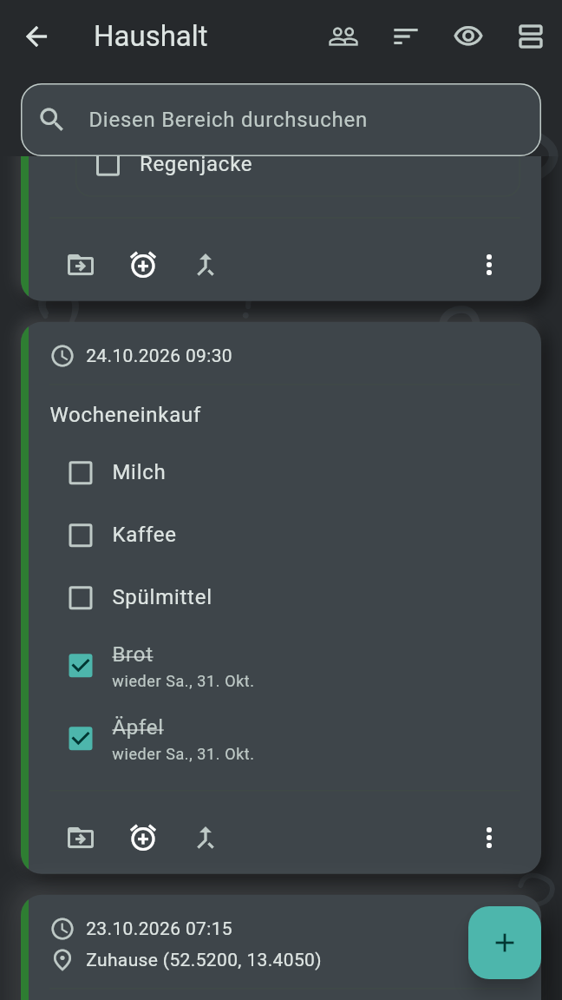
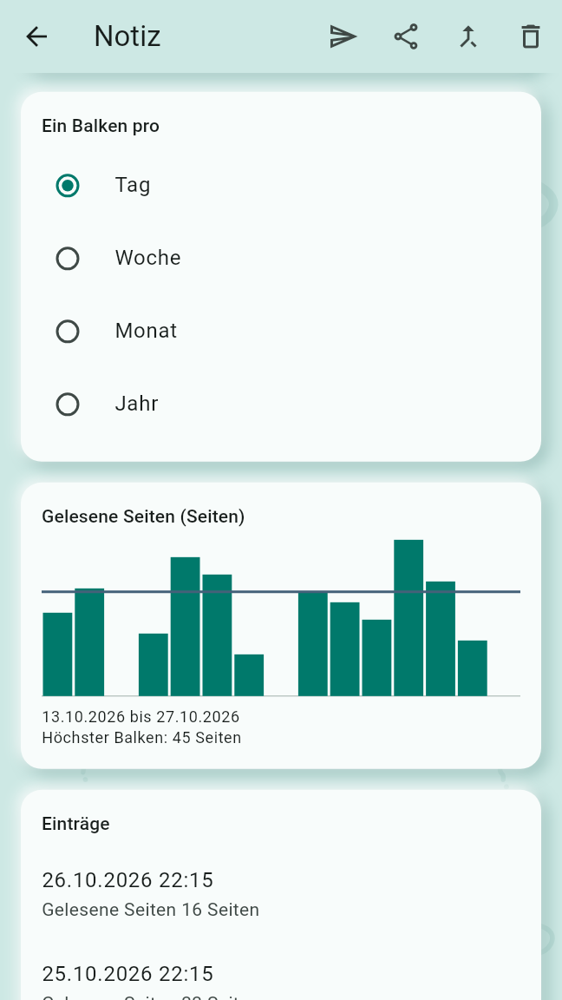
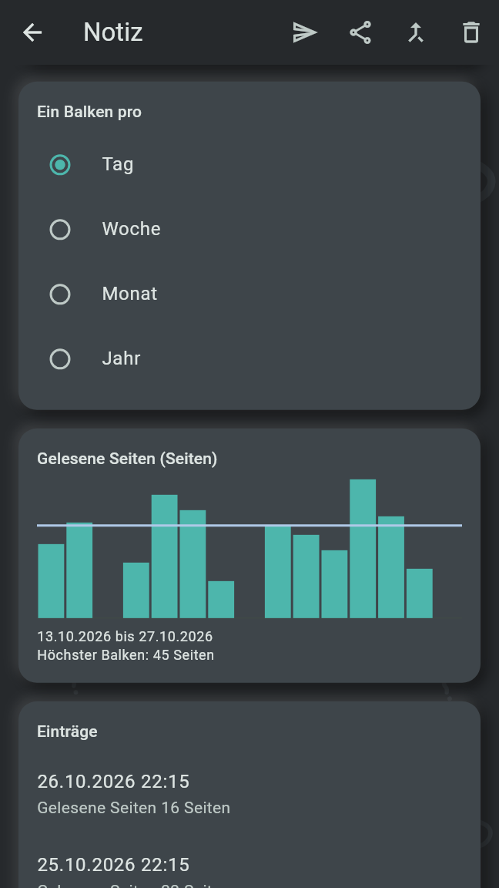

Eine Notiz kann zur Checkliste, zur Einkaufsliste oder zur Strichliste werden, und sie kann neben Routinen und Erinnerungen eine Einheit oder einen Frosch hervorbringen. Eine Notiz ist höchstens eins von Strichliste, Checkliste und Einkaufsliste.
Eine Checkliste ist eine Notiz, deren Zeilen abgehakt werden, etwa eine Packliste. Zur Checkliste machen steht im ⋮ der Karte der Notiz und im Editor der Notiz. Die erste Zeile der Notiz bleibt ihr Text, als Titel; jede andere Zeile, die nicht leer ist, wird eine Zeile der Liste. Eine Zeile, die mit einem Leerzeichen oder Tabulator beginnt, kommt unter die Zeile darüber, und eine, die mit „✓ “ beginnt, ist abgehakt. Eine Notiz, die zur Checkliste wird, ist nicht mehr unsortiert.
In einem geteilten Bereich fügt jeder mit einer Rolle Zeilen hinzu und hakt sie ab; Umbenennen, Verschieben und Löschen einer Zeile bleiben beim Verfasser der Notiz oder der Zeile und bei den Verwaltern.
Eine Routine oder Erinnerung aus einer Checkliste beginnt jede Fälligkeit mit lauter freien Zeilen, auf allen eigenen Geräten und für alle in einem geteilten Bereich gleich. Ihre Zeile in der Agenda listet die Zeilen der Liste unter ihrem Titel, abgehakt wie für diese Fälligkeit, und sie lassen sich dort abhaken. Die Fälligkeit ist erledigt, sobald jede Zeile für sie abgehakt ist, von wem auch immer, oder wenn ihr Kästchen abgehakt wird. Karte und Editor der Notiz zeigen die Zeilen so abgehakt wie für die Fälligkeit, auf der sie gerade steht.
Eine Einkaufsliste ist eine Notiz, deren Zeilen eine Weile nach dem Abhaken wiederkommen, etwa der Wocheneinkauf. Zur Einkaufsliste machen steht im ⋮ der Karte der Notiz und im Editor der Notiz. Wie bei einer Checkliste bleibt die erste Zeile der Titel, und jede andere wird eine Zeile der Liste; Einkaufslisten haben keine Gruppen, und eine Zeile mit „✓ “ ist durchgestrichen.


Die Einstellungen unter „Einkaufslisten in der Agenda“ wählen, wie die Agenda sie heute zeigt, nur auf diesem Gerät:
Die Reihen stehen nach den ganztägigen Fälligkeiten von heute; ein Tipp öffnet die Liste. Eine Routine oder Erinnerung aus einer Einkaufsliste ist nur erledigt, wenn sie abgehakt wird.
Zu einer Einkaufsliste hinzufügen im ⋮ des Erfassungsbildschirms macht jede Zeile der Erfassung zu einer Zeile der gewählten Liste und behält keine Notiz. Eine Aufnahme gibt die Zeilen ihres Transkripts. Wann es angeboten wird, steht in Erfassen und sortieren.
Eine Strichliste ist eine Notiz, die festhält, wie viel von etwas getan wurde, etwa Liegestütze, gelesene Seiten oder Minuten Video. Zur Strichliste machen im ⋮ der Karte der Notiz oder des Erfassungsbildschirms öffnet die Seite ihres ersten Felds; Speichern macht die Notiz zur Strichliste, und sie ist nicht mehr unsortiert.
Ein Feld hat einen Namen, eine Maßeinheit, ein freiwilliges Ziel, das in jedem neuen Eintrag vorausgefüllt ist, und wie „Ein Tag mit mehreren Einträgen zählt“: Ihre Summe oder Den größten Wert, was der Art der Maßeinheit folgt, bis es gewählt ist. Die Maßeinheit ist eine bekannte für Zeit, Strecke, Masse, Geschwindigkeit, Temperatur oder Winkel, oder Andere Maßeinheit, wie getippt, etwa „Seiten“. Sobald Einträge Werte für ein Feld haben, bleibt die Art seiner Maßeinheit. Die Einstellungen unter „Maßeinheiten“ wählen, ob dieses Gerät die bekannten Maßeinheiten metrisch oder angloamerikanisch zeigt oder wie die Region des Telefons; gespeichert werden die Werte immer metrisch. Feld ausblenden nimmt ein Feld aus der Ansicht; seine Werte bleiben gespeichert und kommen mit Feld wieder zeigen zurück.
Die Strichliste steht im Editor der Notiz: ihre Felder, Eintrag hinzufügen und Feld hinzufügen, dann „Ein Balken pro“ Tag, Woche, Monat oder Jahr, ein Diagramm je gezeigtem Feld und die Einträge, der neueste zuerst. Eintrag hinzufügen steht auch im ⋮ der Karte der Strichliste.


Eine Einheit ist eine Routine, die für jede Fälligkeit ein paar Strichlisten aus ihrem Vorrat auswählt. Sie entsteht wie eine Routine, mit Einheit unter dem Wecker, „Routine, Erinnerung, Frosch oder Einheit“, auf der Karte einer Notiz oder dem Erfassungsbildschirm, oder im Abschnitt „Routinen und Erinnerungen“ im Editor der Notiz. Neue Einheit in der Leiste von Alle Routinen und Erinnerungen legt eine an, deren Notiz der in ihrem Editor getippte Text ist. Eine Einheit hat Plan, Erneut erinnern, Eskalation, Serie und Einhaltung einer Routine. Über dem Plan enthält ihr Editor:
Die heutige Zeile einer Einheit in der Agenda listet ihre Auswahl unter ihrem Titel, in der gewählten Reihenfolge, jede Strichliste mit ihren Zielen, etwa „Liegestütze 20 Mal“, durchgestrichen, sobald sie einen Eintrag hat. Ein Tipp auf eine Strichliste der Auswahl öffnet ihr Eintragsformular, mit den Zielen vorausgefüllt; Speichern hält ihn für diese Fälligkeit fest. Jede ohne Eintrag bietet Noch eine, solange der Vorrat eine nicht gewählte Strichliste hat. Die Fälligkeit ist erledigt, sobald jede ausgewählte Strichliste einen Eintrag hat, von wem auch immer, oder wenn ihr Kästchen abgehakt wird; ein entfernter Eintrag hebt das wieder auf. Morgen und die Tage danach zeigen nur, wie viele sie wählt, etwa „Wählt 3 Strichlisten“: Gewählt wird am Tag selbst. Die Auswahl ist auf allen eigenen Geräten und für alle in einem geteilten Bereich dieselbe.
Ein Frosch ist eine Aufgabe einer Notiz ohne Uhrzeit, einmal zu erledigen. Frosch unter dem Wecker auf der Karte einer Notiz oder dem Erfassungsbildschirm, oder im Abschnitt „Routinen und Erinnerungen“ im Editor der Notiz, macht sofort einen; eine Notiz hat höchstens einen offenen Frosch. Ein Frosch klingelt nie und wird nie verpasst; was klingeln muss, ist eine Erinnerung.
Unter den Fälligkeiten von heute bietet der Abschnitt „Iss einen Frosch“ der Agenda zwei offene Frösche am Tag an, und einer davon genügt. Einen anderen tauscht einen Frosch gegen den nächsten. Sobald einer abgehakt ist, steht nur noch dieser für den Tag da, durchgestrichen; wird er wieder freigegeben, stehen die anderen wieder da. Die Auswahl ist auf allen eigenen Geräten dieselbe. Ein Tipp auf einen Frosch öffnet seine Notiz; die Überschrift öffnet die Froschansicht, ebenso Frösche in der Leiste über der Liste der Bereiche, zwischen Alle Notizen und dem Papierkorb.
Die Froschansicht listet die offenen Frösche, die ältesten zuerst, jeden mit seinem Kästchen, und darunter den eingeklappten Abschnitt „Erledigt“ mit den abgehakten, die neuesten zuerst, jeder mit seinem Datum („Erledigt am …“); sein Kästchen hebt das Abhaken auf. Langes Drücken bietet Löschen, das einmal nachfragt; der Frosch kommt in den Papierkorb, seine Notiz bleibt. In einem geteilten Bereich legt ein Verwalter Frösche an und löscht sie, und jeder mit einer Rolle hakt sie ab; ein Frosch, den einer isst, ist für alle gegessen.